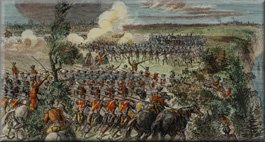
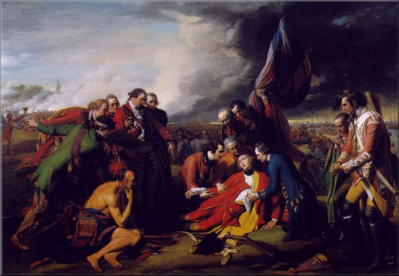

|
Bataille
des plaines d'Abraham
Une petite demi-heure. La bataille des plaines d'Abraham, ce matin du 13 septembre 1759, aura duré, en tout et pour tout, moins d'une heure. C'est un court moment d'histoire lourd de conséquences. Il annonce la ruine de l'empire français d'Amérique. Une année plus tard, la Nouvelle-France capitule. En 1763, le traité de Paris scelle le destin des Canadiens français. L'historien Guy Frégault appelle ce fameux 13 septembre: « la Journée des Fautes» . Les deux généraux français et anglais, Montcalm et Wolfe, commettent des erreurs impardonnables. Ils sont en dessous de tout. Québec se rend alors que la victoire est encore possible.  Vers 4 h du matin, un Canadien arrive à bout de souffle porteur de la mauvaise nouvelle. Le secrétaire du général, Marcel, réveille son chef. Montcalm refuse d'entendre le messager : il est impossible à une armée d'arriver aux Plaines par la falaise. Il engueule son secrétaire et se recouche. Une heure plus tard, un second messager arrive à Beauport avec un message du lieutenant-colonel de Bernetz qui commande Québec en l'absence de Ramezay. Cette fois, le doute n'est plus permis. Montcalm se lève en crachant tous les jurons de la terre, selon son habitude. Vers 6 h, il se met en marche avec ses troupes en direction de Québec. Il aurait mieux fait de rester couché. La bataille de Montcalm L'armada anglaise, forte de 49 vaisseaux de guerre et de 119 transports de troupes, arrive devant Québec en juin. L'armée s'installe à l'île d'Orléans et à la pointe Lévy. Wolfe commande 8500 soldats. Montcalm a sous ses ordres plus de 15 000 hommes, en comptant les soldats réguliers, les miliciens canadiens et les alliés indiens ; il a l'avantage de tenir une position fortifiée que l'ennemi doit prendre d'assaut. Les Anglais n'ont que quelques mois pour se rendre maîtres de Québec. L'hiver est le meilleur allié de Montcalm. Il n'a qu'à contenir l'ennemi jusqu'à la saison froide et celui-ci devra s'en retourner chez lui Gros-Jean comme devant. C'est compter sans l'accumulation des erreurs de jugement et des fautes stratégiques. Première erreur majeure : la pointe Lévy, en face de Québec, est laissée sans défense ; l'amiral Charles Saunders y installe 3000 hommes et des batteries puissantes. Les Canadiens avaient mis Montcalm en garde à ce sujet. Le général français et son état-major avaient jugé la distance trop grande pour que l'artillerie puisse bombarder la ville. Mauvaise évaluation. Durant deux mois, les artilleurs anglais peuvent bombarder Québec jour et nuit. Ils réduisent la capitale en ruines. Quand Vaudreuil autorise un détachement de volontaires et de soldats réguliers à attaquer la pointe Lévy, il est trop tard. La position est imprenable. Deuxième erreur de taille : Montcalm est mal renseigné sur le moral des troupes ennemies et celui de leur chef ; il ignore que Wolfe est gravement malade et que la grogne gagne ses troupes. Découragé, Wolfe a déjà décidé de lever le siège au plus tard le 20 septembre. L'attaque de nuit par la plage du Foulon est une tentative désespérée pour sauver l'honneur. Enfin, l'erreur la plus tragique de Montcalm, aura été de livrer bataille sur les Plaines, c'est-à-dire sur le terrain de Wolfe. Il n'a qu'à encercler l'ennemi et à attendre les renforts de Bougainville qui se tient en réserve, à Cap-Rouge, à la tête de 3000 soldats, la fine fleur de l'armée française. Les 4800 hommes de Wolfe sont transis de peur sur les Plaines. Ils sont entourés de miliciens canadiens et de guerriers indiens qui, cachés dans les arbres et les hautes herbes, les canardent en poussant leurs cris de guerre qui glacent le sang des plus braves. Les soldats anglais n'ont qu'un désir : se sauver par où ils sont venus et rembarquer sur leurs bateaux. Il est 9 h du matin. Montcalm vient d'arriver en vue des Plaines. Contre l'avis de Vaudreuil, il prend la décision insensée de livrer une belle bataille à l'européenne, avec drapeaux, tambours et tout le décorum. Il n'a pas les troupes pour ce faire. Il oblige les Canadiens à s'enligner comme des soldats de plomb et à s'exposer bêtement au tir de l'ennemi. L'historien W. J. Eccles écrit dans le dictionnaire biographique du Canada: « Wolfe a placé son armée dans une situation extrêmement périlleuse. Il est virtuellement à la merci de Montcalm. Ce dernier choisit la seule ligne de conduite qui lui assure la défaite...» On connaît la suite.
Battu, humilié, Montcalm doit rentrer à l'abri des remparts de Québec à la suite de son armée en déroute. Il est 10 h. Passant au pas de son cheval fourbu sous la porte Saint-Louis, il est atteint par une balle perdue. Dans le dos. Il mourra la nuit suivante. Il sera enterré dans un cratère d'obus, sous la chapelle des Ursulines. Quatre jours plus tôt, le général en chef des troupes françaises de la colonie avait déjà rédigé l'acte de reddition de Québec. Avant de mourir et sans en aviser le gouverneur Vaudreuil, ce même Montcalm a le temps d'envoyer une lettre de capitulation au général George Townsend qui a remplacé Wolfe blessé à mort. La bataille de Wolfe
Au physique, il est le contraire de son vis-à-vis. Montcalm est petit et rond comme une citrouille. Wolfe ressemble à une grande asperge. Les deux généraux ont en commun de « n'être guère mieux que des commandants de deuxième ordre» , selon l'expression de l'historien Eccles. Ils sont tous deux méprisés par les officiers compétents placés sous leurs ordres. Durant les trois mois que dure le siège de Québec, Wolfe ne cessera de changer de stratégie. Toutes les initiatives qu'il prend tournent à l'échec. Les historiens s'accordent pour dire qu'il a été servi par la chance sur les plaines d'Abraham. Par la chance et par les erreurs monumentales commises par Montcalm. D'ailleurs, l'idée d'attaquer en débarquant en amont de la ville n'est pas de lui. Cette stratégie est le fait des officiers Townshend, Murray et Monckton. Pendant cinq semaines, aucune bataille sérieuse n'a lieu. Les troupes anglaises sont déprimées. Les officiers critiquent l'indécision de leur chef. Alors, Wolfe décide un débarquement à la rivière Montmorency, le 31 juillet. C'est un échec cuisant. Les Anglais perdent 400 hommes dans l'affrontement. Plusieurs soldats désertent. La débandade de Montmorency aurait pu mettre fin au siège de Québec. Wolfe en fait une maladie. Ce qui ne l'empêche pas d'envoyer des troupes régulières et des rangers américains ravager l'arrière-pays et la Côte-du-Sud. Cette expédition sauvage ne rapporte rien militairement parlant. C'est une tache noire sur le dossier de Wolfe et de toute l'armée anglaise. George Scott commande un détachement de 1000 soldats et rangers. Il se vantera d'avoir tout rasé sur une distance de 52 milles, entre Beaumont et Kamouraska: « Nous avons brûlé 998 bons bâtiments, deux sloops, deux schooners, 10 chaloupes, plusieurs bateaux plats et petites embarcations, nous avons capturé 15 personnes...» Ce que George Scott ne dit pas, c'est que ses rangers ont torturé des colons innocents pour leur faire dire où ils cachaient leur or et qu'ils ont violé leurs femmes et leurs filles. C'est l'un des épisodes les plus gratuitement cruels de la guerre de la Conquête. Au début de septembre, tout indique que le siège de Québec se soldera par un échec retentissant. Alors, Wolfe s'en remet à ses trois premiers officiers. Il faut surprendre Montcalm en débarquant, de nuit, en amont de Québec, pour couper les troupes de Bougainville de celles qui défendent Québec. La première idée est de débarquer à Sillery. À la dernière minute, les assaillants se rabattent sur la plage du Foulon. Montcalm a laissé ce secteur sous la garde d'une centaine de soldats canadiens. Ils sont commandés par un certain Duchambon de Vergor. Les trois quarts des hommes ont obtenu la permission d'aller faire les foins sur leurs fermes. Les rares sentinelles sont maîtrisées. Vergor, lui, dort, probablement assommé d'alcool. Les soldats anglais empruntent le lit d'un ruisseau desséché dans la falaise. Avant le lever du jour, l'armée anglaise occupe les Plaines. Wolfe vient d'enfermer son armée dans un piège qui pourrait être mortel. Montcalm sera incapable d'en profiter.  Une reddition honteuse Le gouverneur Vaudreuil envisage la reddition de Québec, mais pas avant d'avoir épuisé toutes les autres possibilités. Ramezay, le commandant de la ville, est poussé à l'abandon par une petite bourgeoisie locale défaitiste. Il réunit un conseil de guerre. Des voix s'élèvent pour demander la poursuite des combats, dont celle de l'officier Jacau de Fiedmont. Ramezay demande au capitaine Joannès de hisser le drapeau blanc. L'officier refuse d'obéir. Le 17 septembre, Vaudreuil retrouve son aplomb. Il ordonne à Ramezay de tenir bon. Le chevalier de Lévis vient d'arriver de Montréal. Il prend la tête des troupes françaises. Il regroupe son armée dans la vallée de la Jacques-Cartier. Il marche sur Québec avec les troupes d'élite de Bougainville. Il est trop tard. Ramezay craque. Il passe outre aux ordres du gouverneur. Il signe la capitulation. Nous sommes le 18 septembre 1759. En apprenant la nouvelle, Lévis, indigné, s'écrie: « Il est inouï que l'on rende une place sans qu'elle soit attaquée ni investie» . Pauvre Nouvelle-France! (Sources: le dictionnaire biographique du Canada ; Histoire populaire du Québec, de Jacques Lacoursière ; La guerre de la conquête, de Guy Frégault.) |

 Wolfe a 32 ans au moment des faits. Il est de santé fragile. Il souffre de
rhumatisme chronique et de gravelle (douloureux calculs urinaires). Durant le
mois qui précède la bataille finale, il a dû s'aliter, victime d'une sérieuse
attaque de dysenterie. Cela peut expliquer son caractère exécrable.
Wolfe a 32 ans au moment des faits. Il est de santé fragile. Il souffre de
rhumatisme chronique et de gravelle (douloureux calculs urinaires). Durant le
mois qui précède la bataille finale, il a dû s'aliter, victime d'une sérieuse
attaque de dysenterie. Cela peut expliquer son caractère exécrable.